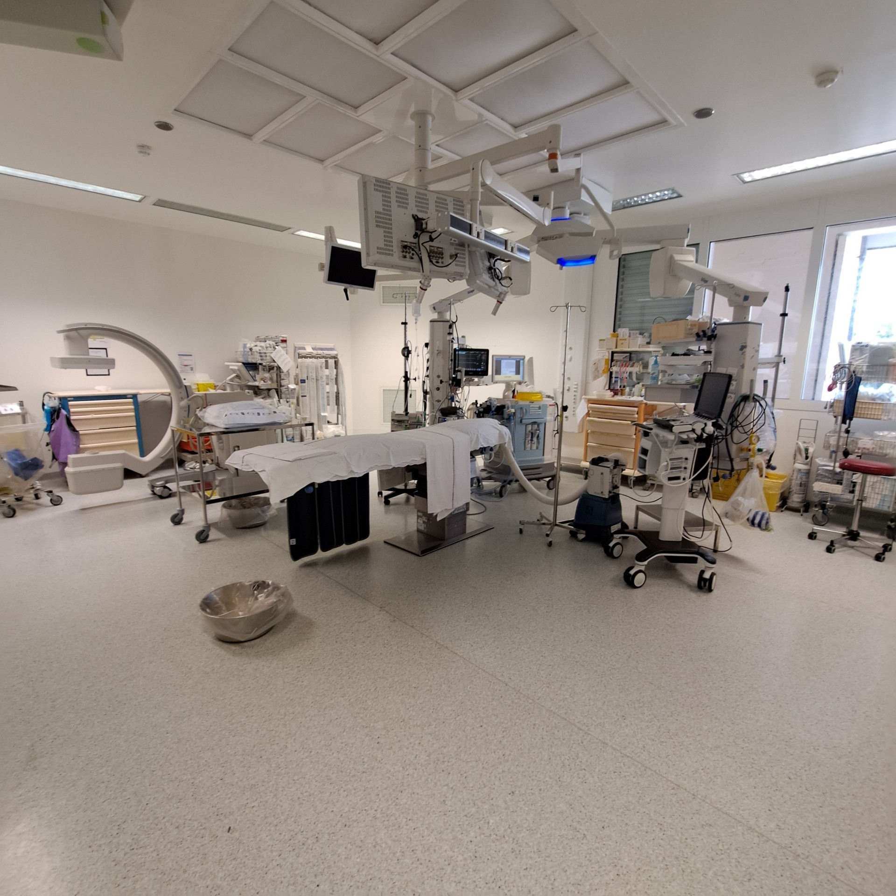

J'ai participé à la préparation et à la configuration de téléphones de bureau destinés aux différents services de l'établissement, en veillant à leur bon fonctionnement et à leur conformité aux besoins des utilisateurs.
J'ai également assuré la maintenance du réseau et la maintenance informatique, incluant le dépannage matériel et logiciel, l'assistance aux utilisateurs et la résolution d'incidents techniques.

Une partie de mes missions portait sur la gestion et le suivi des serveurs, garantissant leur disponibilité et leur bon fonctionnement.
Enfin, j'étais en charge de la gestion des stocks de téléphones de bureau, réalisée à l'aide d'Excel, permettant un suivi précis du matériel, des entrées et des sorties.